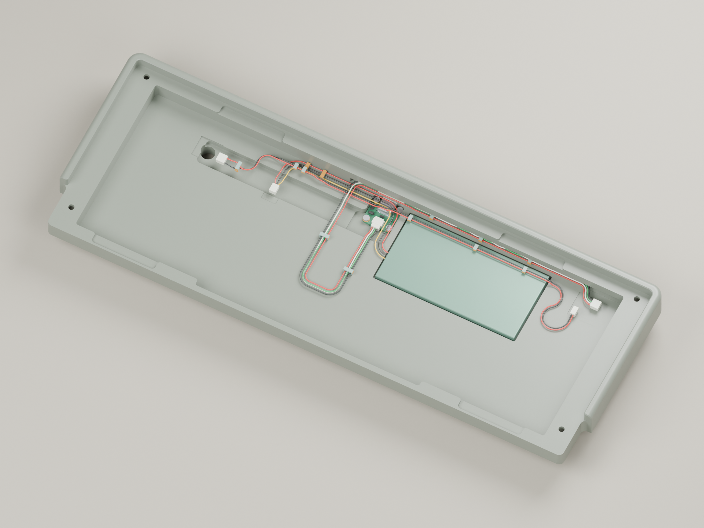

English | Chinese
CORNER-05 assembly views

The shell surfaces use the FELK60-based upper case and M04 lower case from this delivery. Both retain their source dimensions. The steel plate uses the current NiZ DXF. The mainboard shows copper, solder mask, markings and drills from the selected native PCB. The illustrated finish, keycap profile and legends can differ from purchased parts.

Read the stack from the bottom case upward through the PCB, insulated standoffs, conical springs, silicone domes, steel plate, NiZ housings and sliders, upper case and caps. The illustration separates the wiring, battery and C5 from their installed positions so they can be seen. It shows the four feet together below the shell. Use the CAD and guides for slot assignments and installation datums.
| Assembly stage |
Parts and reference |
| 1. Prepare the case and steel plate |
Inspect finished case dimensions, bores and switch opening samples. Prepare four M3 and four M2 cold-bond inserts. Cut four gaskets for each of the two plate faces. Manufacturing instructions |
| 2. Complete the mainboard |
Solder and inspect all 75 fitted references in the prescribed order. Keep the pack disconnected during initial tests. Illustrated bench guide |
| 3. Dry-fit the sensing stack |
Use 60 NiZ housings/sliders, 60 domes, 60 springs and three plate stabilizer pairs. Fit two short wires and the centered 6U wire. Use 28 standoffs, 28 insulating discs, 28 washers and 28 M1.6 screws. Leave H26 unused. Mechanism guide |
| 4. Flash and calibrate outside the shell |
Confirm USB and BLE behavior, save all 60 key baselines with the calibrator and load the normal image while preserving settings. Firmware installation |
| 5. Trial the lower case |
Check the existing C5 on its four M2 screws and insulating washers. Check the complete protected pack envelope and keep its connector isolated. Trial the three harnesses in the M04 lower case and the 16 rigid parts with removable positioning. Harness routing · Retainer guide |
| 6. Verify installation access |
Before permanent bonding, demonstrate insertion and withdrawal of the stack with the actual plugs and wires. Verify that no connector, wire or pack is strained or trapped. After these checks and prototype electrical acceptance, verify the closed keyboard using four M3 closure screws and shims. Pack requirements |

The interior view shows the installed geometry with the PCB hidden. Some clips in this view attach to the removed PCB. Match their installed Z positions and mating faces to the retainer STEP references. The nine wire centrelines come from the nominal harness study, with diameter set to the specified insulation limit.

The scene includes models for 73 fitted references. U1 and SW100 use the design envelopes. The five mating plugs, battery wrap, NiZ plastic, domes, springs, keycaps, stabilizers, gaskets and thread details are visual representations. Use the source manifest to check the exact revision, model coverage and image hashes. Tool access and cable motion have separate case service checks. Resin and tape performance, RF behavior and physical electrical acceptance remain open.